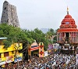
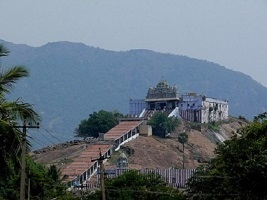
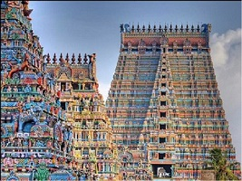
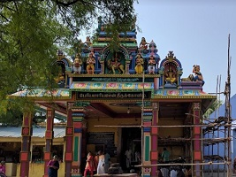

Srivilliputhur - Festivals
-

Car Festival
Grand festival in Andal Temple as a part of Adi Pooram festival. The festival day will be declared as a local holiday for Virudhunagar district to fecilatate devotees to attend the festival.
-

Purattasi Festival in Sri Srinivasa Perumal Temple
Lakhs of devotees will come on Purattasi Saturdays and special buses are arranged from various parts of the district.
-

Andal Thirukkalyana Bramotsavam
It is celebrated for 10 days on Mar/Apr Month and Thirukkalyanam will take place on ninth day.
-
Adi Pooram
It is also celebrated for 10 days and the car festival is on ninth day.
-
Margazhi Thiru Adyayana Utsavam
Also called as Azhwars Divya Prabhandam Celebrated on Dec-Jan month duration. It is celebrated in all Vaishnava temples.
-

Pookuzhi festival in Mariamman temple celebrated on April
12 days celebration ends with Pookuzhi festival and Car Festival. Approx 1 lakh devotees will participate in the festival.